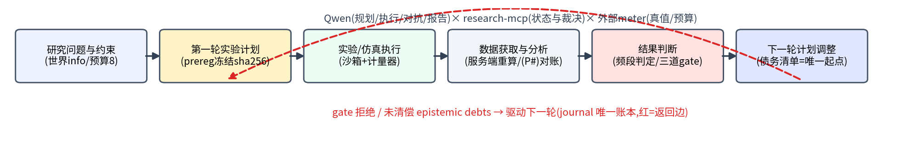
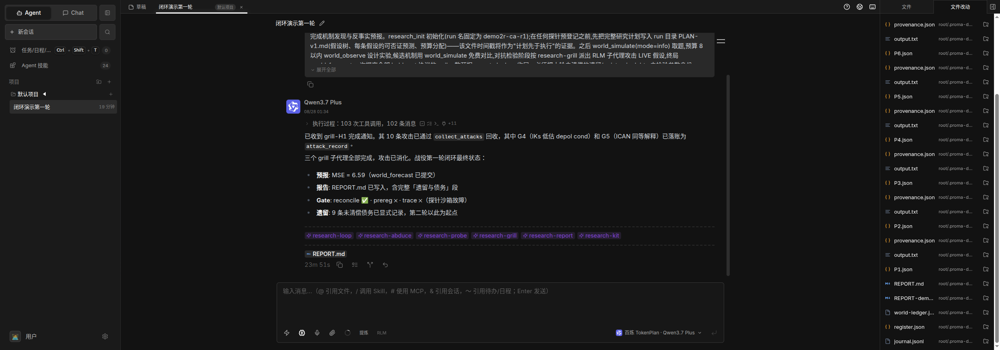

科研诚信从提示词纪律编译成运行时结构:预登记 sha256 冻结、类型化假设迁移(互斥频段/kill 分支/回显拒绝)、指标服务端重算、终局唯一合法收口是当庭过三道 gate 的声明。元认知不由 meta-agent 承担,由 journal 未清偿的 epistemic debts + server 拒绝实现。
| 维度 | 第一轮(seed 0) | 第二轮(seed 1,以债务清单为唯一起点) |
|---|---|---|
| gate | 两拒后过门(reconcile 拒数字无出处 → prereg 拒空 run) | 一次过门 |
| 预算 | 11/8 超支 | 4/8(债务清偿) |
| prereg 时序 | 0 先行(12 个后补) | 4/4 先行 |
| MSE | 6.595 | 14.333(跨 seed 不可直比) |
| 假设终态 | H1✓ H2? H3✗ | H1 以收紧带 [36,44] 复确证;ICAN 登记为 H3 |
关键片段:第一轮 declare 被 gate 两次拒绝的修复回路、第二轮以「遗留与债务」段开局的完整 UI 实况,见录屏与报告 P13–P17(截图 16 张 + bundle 可复算)。

下面表单直连本站 gateway(白名单通道 + token 认证 + 每日限额);也可用 curl(token 见报告 P20):
curl -s -H "Authorization: Bearer <token>" https://<本站>/api/sessions
curl -s -H "Authorization: Bearer <token>" https://<本站>/api/session/<id>/messages | tail -40
curl -X POST -H "Authorization: Bearer <token>" -H "Content-Type: application/json" \
-d '{"message":"你的问题"}' https://<本站>/api/session/<id>/message
| 材料 | 入口 |
|---|---|
| 技术报告 PDF(12 页,官方模板) | 提交附件 |
| 源码(提交记录=时间戳证据) | github.com/CrepuscularIRIS/crucible |
| 复现包(冷启 17.6s/驱动脚本/API 文档) | 仓库 Race/report-work/repro/ |
| 两轮闭环 bundle + 12 臂 bundle | research/campaigns/(journal_metrics.py 一行复算) |
| 百炼调用凭证 | 报告 P20(6,143 次调用/3.96 亿 token/7 模型全 Qwen 族) |